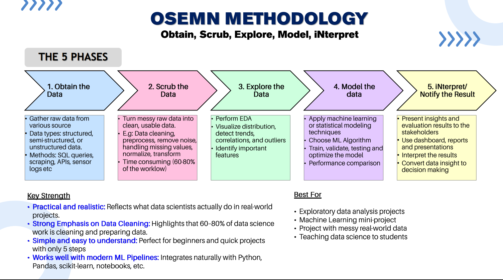

OSEMN Data Science Methodology
Visual Elements
Home
Methodology Overview
OSEMN Steps
Real-World Example
Visual Elements
Dataset
References
About
OSEMN Workflow Diagram
The diagram below illustrates the full OSEMN data science workflow.
